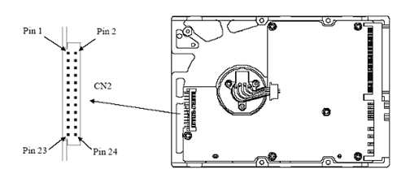
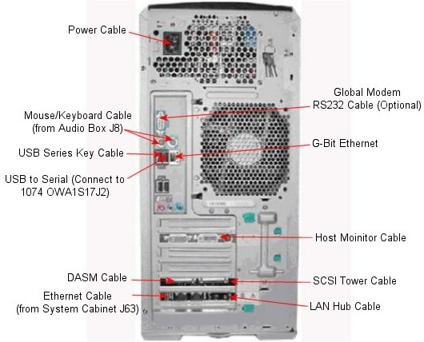
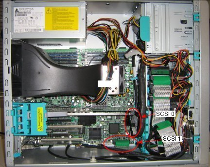

Operating Documentation
Direction 5440001-3, Rev# 6
Signa HDxt Service Methods
Module Version 3.0, Version Date 11/17/08
Operating Documentation |
The following information may assist in determining problems with the HP9300 PC.
The only FRUs associated with the HP9300 are the three 73 GB hard drives, the Network card, and the actual PC.
| NOTE: | The unique Network Address on the network card is used for the Host ID. If the PC is replaced, transfer the network card to maintain the customer's options. |
| LED Status | LED Color | System Status |
|---|---|---|
| Solid | Green | System is On. |
| Blinking | Green | System is in Standby. |
| Solid or Blinking | Red | System has error. |
| None | No Light | System is in Hibernate or is Off. |
Power On Self Test (POST) is a series of diagnostic tests that runs automatically when system is turned on. A visual message occurs if the POST encounters a problem.
| Activity | Beeps | Possible Cause |
|---|---|---|
| Red Power LED blinks 2 times every second, followed by a two-second pause | 2 | Processor thermal protection activated: A fan may be blocked or not turning. Heatsink assembly may not be properly attached to the processor. |
| Red power LED blinks 3 times every second, followed by a two-second pause. | 3 | Bad processor. |
| Red power LED blinks 4 times every second, followed by a two-second pause. | 4 | Power failure; power supply is overloaded. |
| Red power LED blinks 5 times every second, followed by a two-second pause. | 5 | Pre-video memory error. |
| Red power LED blinks 6 times every second, followed by a two-second pause. | 6 | Pre-video graphics error. |
| Red power LED blinks 7 times every second, followed by a two-second pause. | 7 | System board failure: ROM detected failure prior to video. |
| Red power LED blinks 8 times every second, followed by a two-second pause. | 8 | Invalid ROM based on bad checksum. |
| Red power LED blinks 9 times every second, followed by a two-second pause. | 9 | System powers on, but does not boot. |
Illustration 1 indicates proper SCSI setting for the hard drives. SCSI device 0 is the system software drive, and SCSI devices 1 and 2 are for image storage.
Illustration 1: Disk Drive Configuration

| SCSI Device | Jumper Settings | Disk Purpose |
|---|---|---|
| SCSI = 0 | No jumpers between 1 to 8 | Software |
| SCSI = 1 | Jumper between 1 and 2 | Image Disk |
| SCSI = 2 | Jumper between 3 and 4 | Image Disk |
See Illustration 2 for all cable connections.
Illustration 2: Output Locations

The SCSI 0 output must always connect to HDD 0, usually the lower hard drive. This drive contains the application software.
The SCSI 1 output must always connect to HDD 1 (middle) and HDD 2 (upper) hard drives. These drives will contain the image data. (See Illustration 3.)
Illustration 3: SCSI Device Locations
